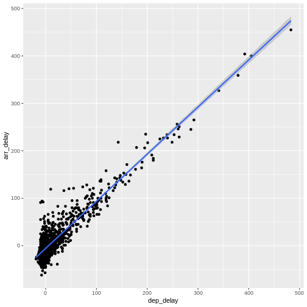

Boxplots and linear regressions
Last updated on 2025-10-21 | Edit this page
Estimated time: 115 minutes
Overview
Questions
- “How do I make a Boxplot?”
- “How do I make a linear regression?”
Objectives
- “Learn how to visualise the distribution of your data using boxplots”
- “Learn how to investigate correlations between variables using linear regressions”
Boxplots
Boxplots are a common way of quickly visualizing some summary statistics for different groups in our data.
For this example, we use air_time, the time the flight takes, instead of departure delays.
R
flightdata %>%
left_join(carriers) %>% relocate(name, .after = carrier) %>%
ggplot(mapping = aes(x = name, y = air_time)) +
geom_boxplot() +
coord_flip()
OUTPUT
Joining with `by = join_by(carrier)`WARNING
Warning: Removed 9430 rows containing non-finite outside the scale range
(`stat_boxplot()`).
The boxplots show the inter quartile range with the white box. The solid black line within that, is the median of the air_time. The horizontal lines, called whiskers, on each side of the white box shows the “minimum” and “maximum” observations, defined as the observations that lies no longer from the IQR than 1.5 of the IQR.
The solid dots at each end of the boxplot, represents outliers, observations that lies outside the whiskers.
Depending on the data, and the nature of the analyses we are going to do, outliers are either very interesting, or something that we can ignore.
In this case it might be interesting to investigate which destinations Hawaiian Airlines serve. Their fligts are much longer than the flights of the rest of the airlines.
Let us take a look:
R
flightdata %>%
left_join(carriers) %>% relocate(name, .after = carrier) %>%
filter(name == "Hawaiian Airlines Inc.") %>%
count(dest)
OUTPUT
Joining with `by = join_by(carrier)`OUTPUT
# A tibble: 1 × 2
dest n
<chr> <int>
1 HNL 342The count() function counts the number of times a value
exists in a given column, in this case dest.
Conclusion: Hawaiian Airlines only flies to Honolulu.
Which airlines flies to Honolulu?
R
flightdata %>%
left_join(carriers) %>% relocate(name, .after = carrier) %>%
filter(dest == "HNL") %>%
count(name)
OUTPUT
Joining with `by = join_by(carrier)`OUTPUT
# A tibble: 2 × 2
name n
<chr> <int>
1 Hawaiian Airlines Inc. 342
2 United Air Lines Inc. 365Here we filter in order to only have flights to Honolulu, and then count the different airlines. Only United Air Lines and Hawaiian Airlines have fligths to Honolulu.
This also reveals, that the “outliers” for United Air Lines at the extreme right of the plot are not really outliers. They appear because these are the flights to Honolulu. The representation of the data implies that there are a lot of outliers from one single distribution of airtime for United Air Lines. But in reality, the airtime for UA is a bimodal distribution.
Boxplots are not necessarily a good idea
The boxplots of the air_time indicates that there is more structure in the data than boxplots can reveal. Maybe we should look at the distribution of airtime amongst the airlines.
We could plot histograms of the airtime for each airline. Or we could
plot the smoothed histograms we saw in the correllograms for each
airline. Or we can use an extra package, ggridges to do
something fancy.
Begin by installing the package:
R
install.packages("ggridges")
Then load the package, and plot the data:
R
library(ggridges)
flightdata %>%
left_join(carriers) %>% relocate(name, .after = carrier) %>%
ggplot(aes(x = air_time, y = name, fill = name)) +
geom_density_ridges() +
theme(legend.position = "none")
OUTPUT
Joining with `by = join_by(carrier)`
Picking joint bandwidth of 5.42WARNING
Warning: Removed 9430 rows containing non-finite outside the scale range
(`stat_density_ridges()`). The number of flights United Air Lines have to Hawaii is too low to
actually see here. But we do get a more nuanced view of the distribution
of airtime for the individual airlines than we do using boxplots.
The number of flights United Air Lines have to Hawaii is too low to
actually see here. But we do get a more nuanced view of the distribution
of airtime for the individual airlines than we do using boxplots.
What about a linear regression?
We saw earlier, that there was a correlation between departure delay and arrival delay. Can we use the data to predict how delayed we will be upon arrival, when we know that the departure was 47 minutes delayed.
First, the plot:
R
flightdata %>%
sample_frac(0.005) %>%
ggplot(mapping = aes(x = dep_delay, y = arr_delay)) +
geom_point()
WARNING
Warning: Removed 41 rows containing missing values or values outside the scale range
(`geom_point()`). This looks more or less linear. We can place a linear regression line in
the plot using the function
This looks more or less linear. We can place a linear regression line in
the plot using the function geom_smooth(method = "lm"),
where we specify that the function should fit a linear line to the
data.
R
flightdata %>%
sample_frac(0.005) %>%
ggplot(mapping = aes(x = dep_delay, y = arr_delay)) +
geom_point() +
geom_smooth(method = "lm")
OUTPUT
`geom_smooth()` using formula = 'y ~ x' So, what is the actual linear model of this data?
A linear model in this case would be a formula on the form:
\(arr_{delay} = a\cdot dep_{delay} + b\)
The task is now to find the values of a and
b that best fit the data. This is called “fitting a linear
model”.
Fitting a linear model to data is done using the lm()
function.
We need to specify the actual model that we want to fit, using the special formula notation in R:
arr_delay ~ dep_delay
In addition we have to specify the input data in the function:
R
model <- lm(arr_delay ~ dep_delay, data = flightdata)
We do this on the entire dataset without any problems.
Let us take a look at the result:
R
model
OUTPUT
Call:
lm(formula = arr_delay ~ dep_delay, data = flightdata)
Coefficients:
(Intercept) dep_delay
-5.899 1.019 We will not spend time on a complete discussion on p-values, but the
way to get them is to call the function summary() on the
model:
R
summary(model)
OUTPUT
Call:
lm(formula = arr_delay ~ dep_delay, data = flightdata)
Residuals:
Min 1Q Median 3Q Max
-107.587 -11.005 -1.883 8.938 201.938
Coefficients:
Estimate Std. Error t value Pr(>|t|)
(Intercept) -5.8994935 0.0330195 -178.7 <2e-16 ***
dep_delay 1.0190929 0.0007864 1295.8 <2e-16 ***
---
Signif. codes: 0 '***' 0.001 '**' 0.01 '*' 0.05 '.' 0.1 ' ' 1
Residual standard error: 18.03 on 327344 degrees of freedom
(9430 observations deleted due to missingness)
Multiple R-squared: 0.8369, Adjusted R-squared: 0.8369
F-statistic: 1.679e+06 on 1 and 327344 DF, p-value: < 2.2e-16Linear regressions are used to find connections between data. We might be building a model, where we try to figure out what causes delays in this data. Or find the correlation between taking a specific drug and recovering from a disease.
Correlation does not imply causation!
Even if you find a strong correlation between two variables in your data, you have not necessarily found an explanation. There is a very strong correlation between how much it rains in Hillsborough County in Florida, USA, and how much money The United Kingdom spends on its military. That does not imply that spending more money on guns in the UK will make it rain more in Florida.
The lm() function can handle more than one explanatory variable.
Simple linear combinations of them are specified using a
+ in the formula, like this:
R
model_2 <- lm(arr_delay ~ dep_delay + air_time, data = flightdata)
summary(model_2)
OUTPUT
Call:
lm(formula = arr_delay ~ dep_delay + air_time, data = flightdata)
Residuals:
Min 1Q Median 3Q Max
-107.679 -10.979 -1.759 8.810 203.240
Coefficients:
Estimate Std. Error t value Pr(>|t|)
(Intercept) -4.8318053 0.0606415 -79.68 <2e-16 ***
dep_delay 1.0187233 0.0007861 1295.92 <2e-16 ***
air_time -0.0070547 0.0003362 -20.98 <2e-16 ***
---
Signif. codes: 0 '***' 0.001 '**' 0.01 '*' 0.05 '.' 0.1 ' ' 1
Residual standard error: 18.02 on 327343 degrees of freedom
(9430 observations deleted due to missingness)
Multiple R-squared: 0.8371, Adjusted R-squared: 0.8371
F-statistic: 8.41e+05 on 2 and 327343 DF, p-value: < 2.2e-16Interactions between explanatory variables are specied using a
* sign:
R
model_3 <- lm(arr_delay ~ dep_delay*air_time, data = flightdata)
summary(model_3)
OUTPUT
Call:
lm(formula = arr_delay ~ dep_delay * air_time, data = flightdata)
Residuals:
Min 1Q Median 3Q Max
-107.475 -10.963 -1.784 8.809 203.376
Coefficients:
Estimate Std. Error t value Pr(>|t|)
(Intercept) -4.739e+00 6.236e-02 -75.998 < 2e-16 ***
dep_delay 1.011e+00 1.459e-03 692.785 < 2e-16 ***
air_time -7.672e-03 3.499e-04 -21.923 < 2e-16 ***
dep_delay:air_time 5.451e-05 8.590e-06 6.346 2.22e-10 ***
---
Signif. codes: 0 '***' 0.001 '**' 0.01 '*' 0.05 '.' 0.1 ' ' 1
Residual standard error: 18.01 on 327342 degrees of freedom
(9430 observations deleted due to missingness)
Multiple R-squared: 0.8371, Adjusted R-squared: 0.8371
F-statistic: 5.607e+05 on 3 and 327342 DF, p-value: < 2.2e-16- “Boxplots are useful for comparing distributions”
- “Boxplots can hide multiple distributions in a variable”
- “Density plots can reveal multiple distributions in variables”
- “Correlations between variables can be quantified using linear models”